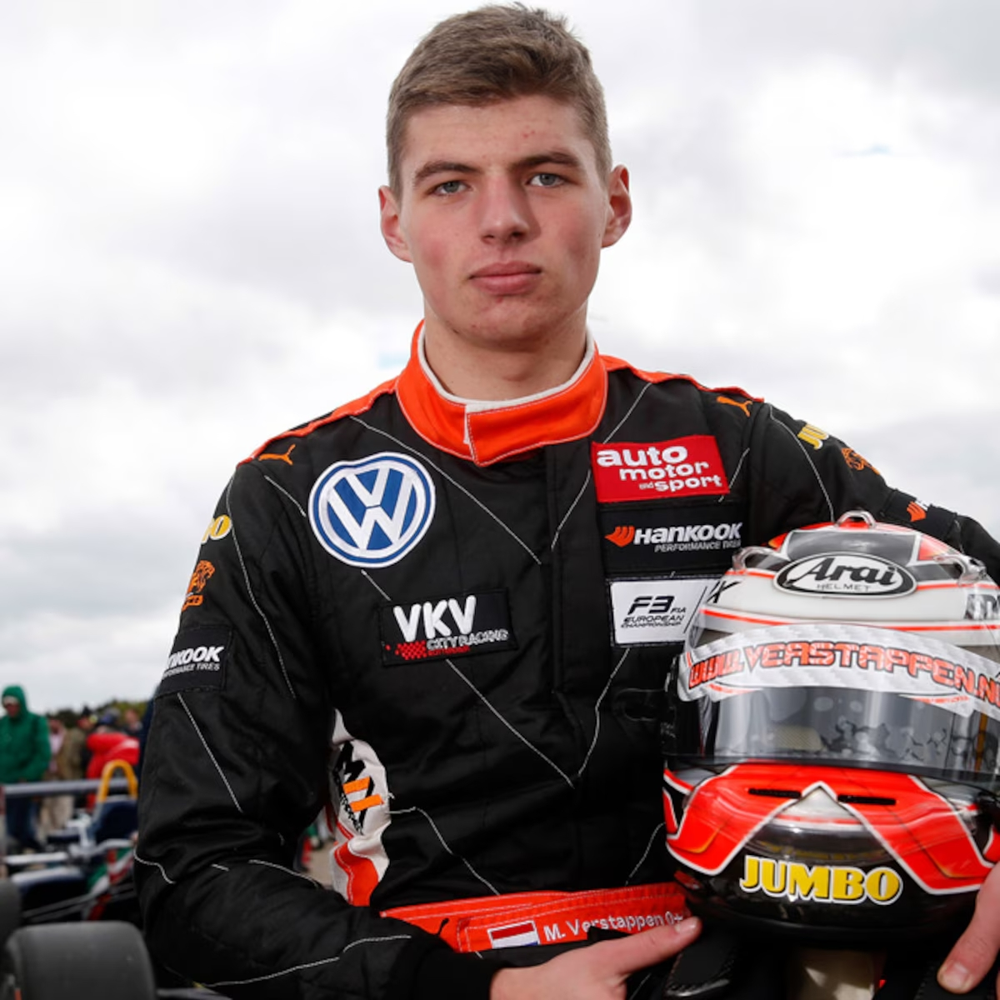
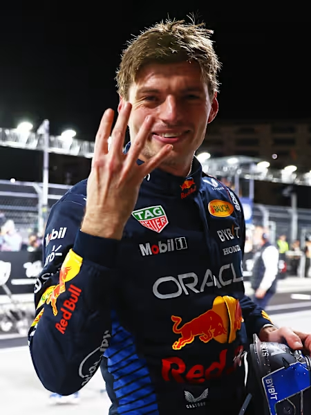
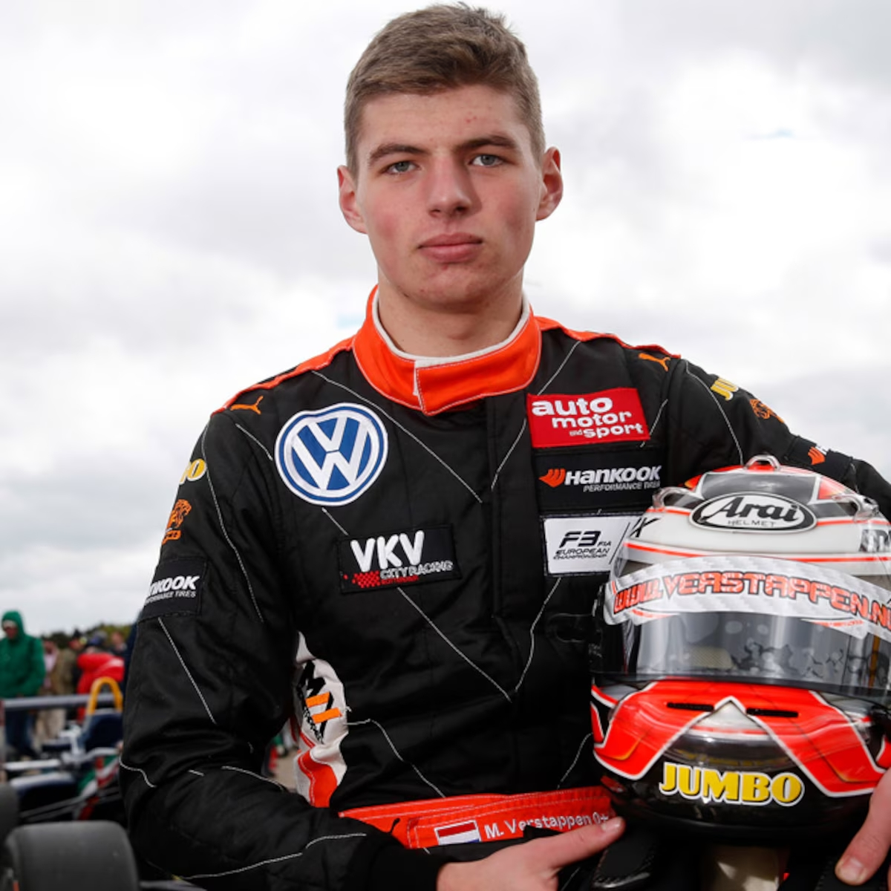
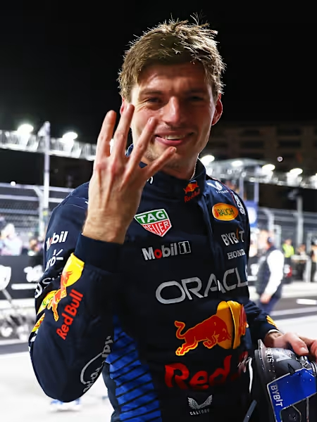

Historia Max Verstappen
Imágenes Destacadas
 



Infancia y orígenes
Max nació en una familia profundamente ligada al automovilismo. Su padre, Jos Verstappen, fue piloto de Fórmula 1 en los años 90, y su madre, Sophie Kumpen, también fue una destacada piloto de karts en Bélgica. Desde niño, Max vivió entre circuitos y motores. Con solo 4 años, ya competía en karting, y rápidamente empezó a ganar campeonatos juveniles en Bélgica y Holanda.
Su dedicación fue desde una edad muy temprana, mostrando un talento innato.
Adolescencia Complicada
La adolescencia de Max Verstappen fue muy dura y exigente. Su padre, Jos, lo entrenaba con disciplina extrema, sin descanso ni vida social. Pasaba todo el tiempo compitiendo y perfeccionando su manejo. Aunque fue difícil, esa presión lo hizo fuerte y lo preparó para ser campeón del mundo.
Este periodo forjó su carácter y su mentalidad ganadora.
Actualidad
Fuera de las pistas, se centra en su preparación física y mental, participa en entrenamientos de simuladores, coordina con su equipo y planifica su futuro profesional. Además, mantiene una vida bastante privada y tranquila, enfocada en mejorar cada día, aprender de los errores y mantenerse en la cima de su rendimiento.